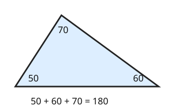

Part of Angle Facts. Answer in the chat (1: ..., g: c), add sure or guess after any answer, and say done when finished.
Help is down to 2, since you said too easy: an outline and a picture, no worked example.
Last time: a triangle has angles of 50 and 70 degrees. What is the third? You said b) 240. It is a) 60.

Tear the three corners off a paper triangle and set them side by side: they make a straight line. So the inside angles add up to 180, not 360 (notes 5).
Q1. A triangle has angles of 25 and 110 degrees. What is the third?
45 (sure)
Right: 25 + 110 = 135, and 180 - 135 = 45 (notes 5).
Q2. A right triangle has one other angle of 38 degrees. What is the third?
52 (guess)
Right: 90 + 38 = 128, and 180 - 128 = 52 (notes 1, 5).
Q3. Ali says a triangle can have angles of 100 and 90 degrees. What is wrong?
100 + 90 is 190, more than the 180 the whole triangle has, so there is nothing left for the third angle
Right: two angles alone would pass 180 (notes 5).
You can now find the third angle of a triangle.
A triangle has two equal sides, and the angle between them is 40 degrees. How big is each of the other two angles?
a (sure)